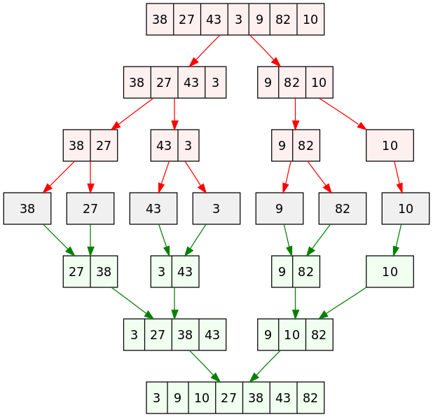
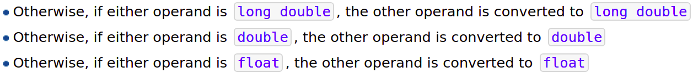
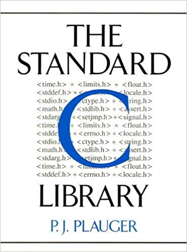

Recursion; Data Types
Hengfeng Wei
hfwei@nju.edu.cn

Nov. 22, 2021
Review
Recursion
A function that calls itself.
Recursion
Thinking Recursively

Overview
Recursion (More Examples)
Data Types
static
"Talk is Cheap. Show me the Code."

Binary Search

bsearch-re.c
Merge Sort

merge-sort.c
Data Types
The type of a variable determines
- the set of values it may take on and
- what operations can be performed on them.
int double char
Integral Types
Signed (有符号数)
short intintlonglong long
Unsigned (无符号数)
bool(stdbool.h)unsigned short intunsigned intunsigned longunsigned long long
char (unsigned/signed)
Overflow (溢出)
- 有符号整数运算中发生溢出, 程序的行为是未定义的。
- 无符号整数运算中发生溢出, 程序的行为是有定义的。
Integral Promotion (整型提升)
- 定义初始化
- 赋值操作
- 参数传递
- 函数返回值
Integral Promotion (整型提升)

"Arithmetic operators do not accept types smaller than int as arguments, and integral promotions are automatically applied."
Floating-point Numbers
float y = 5.0F%f%f
double x = 5.0%lf%f
long double z = 5.0L%Lf%Lf
Floating-point Numbers

Floating-point Arithmetic


"Floating-point Arithmetic is Hard."
Floating-point Arithmetic

float.h (Section 23.1)
Floating-point Arithmetic
- Overflow (上溢)
- Underflow (下溢)
- Significance Loss (精度丢失)
significance.c
Floating-point Arithmetic
"Many applications don't need floating-point arithmetic at all."

Use math.h (Section 23.3) whenever possible.
C 语言安全编码标准

整型数安全编码标准 (INT)
- 使用正确的整数类型
- 确保无符号整数运算不产生回绕
- 确保有符号整数运算不造成溢出
- 确保除法与余数运算不造成除0错误
- 确保整数转换不会造成数据丢失或者错误解释
浮点数安全编码标准 (FLP)
- 不要使用浮点数变量作为循环计数器
- 避免或者检测数学函数中的定义域与值域错误
- 确保浮点数转换在新类型的范围中
References